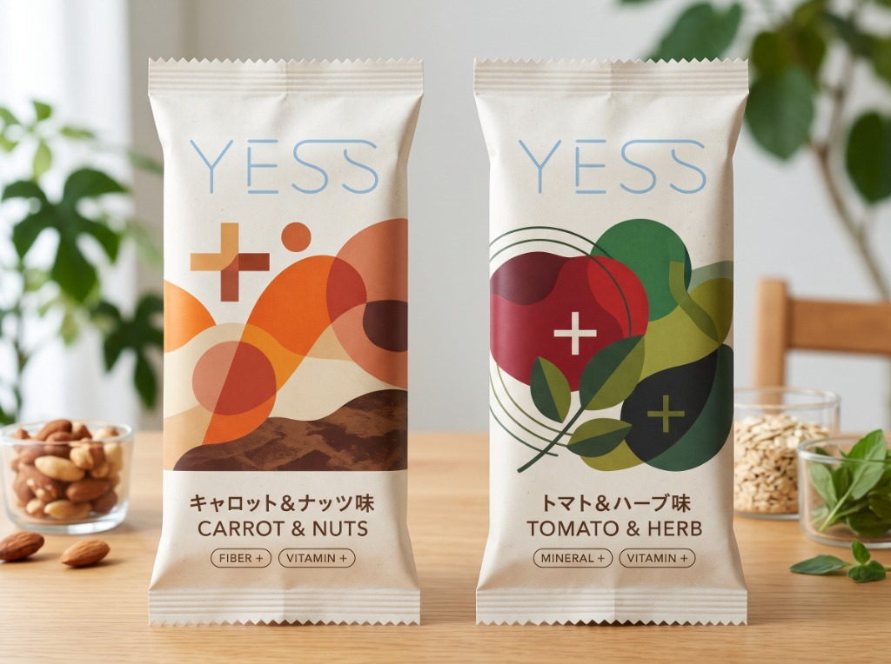
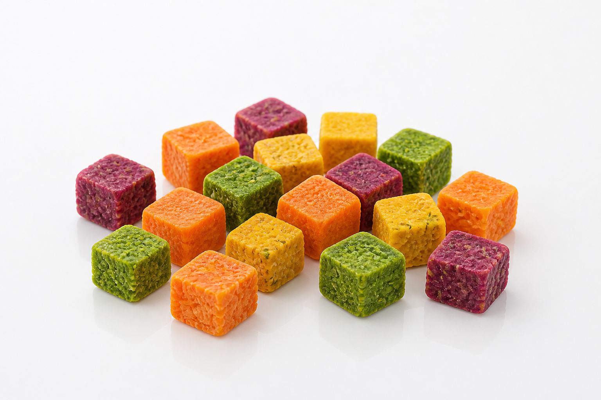

作業中の間食で
野菜補給。
キーボードの隙間に落ちるお菓子の粉や、指先につく油・ベタつき。気になって作業の手が止まっていませんか？
「YESS」は、画面から目を離さず、パソコンやデスクを汚さずに一口で野菜をとれるように開発中の新しい間食です。
- 01 手につかない 指で直接つまんでも、キーボードやマウスに油膜やベタつきがつきにくい設計
- 02 一口キューブ 前歯でかじる必要がないため、キーの隙間やデスクに破片が飛び散りません
- 03 野菜の繊維 野菜本来の食物繊維を活かし、デスクで手軽につまめる形状へ
フレーバー候補を見る ↓
※本ページは商品の販売ではなく、パソコン作業中の間食についての課題調査および製品開発のための需要検証を目的としています。


デスクワーク中、
どんな味なら食べたいですか？
「キーボードを叩きながら、どんな味なら思わず手を伸ばしたくなるか？」
開発中などの制約は度外視で構いません。あなたがデスクで本当に食べたい味を直感でお選びください（複数選択可）。選んだ味はページ下部のアンケート（Q4）へ自動反映されます。
デスクの汚れか、
野菜不足か。
パソコン作業が長くなると、デスクまわりをきれいに保つことと、ちゃんと野菜をとることを両立するのは意外と難しいものです。
油やベタつき、粉落ちで作業が止まる
ナッツの油やチョコのベタつきが指につくと、キーボードやマウス、トラックパッドが汚れてしまいます。クッキーやバー菓子をかじると、細かい破片がどうしてもキーの隙間に落ちてしまいます。そのたびにウェットティッシュで手を拭いたりデスクを払ったりと、せっかくの集中が途切れてしまいます。
昼食が手軽な炭水化物ばかりになってしまう
忙しい日のランチは、うどんやラーメン、パン、おにぎりなど、手早く食べられる炭水化物だけで済ませてしまいがちです。かといってデスクで生野菜サラダを食べるのは、ドレッシングの飛び散りや片付けの手間があって面倒なもの。市販のお菓子ばかりだと、「また野菜をとれなかったな」という罪悪感が残ってしまいます。
YESSの
試作アイデア。
普通のお菓子や1本型の栄養バーではなく、「パソコンの前に置きっぱなしで気兼ねなく食べられること」を目指して、個包装スティック×一口キューブの設計をテストしています。
デスクに自立するスタンドパウチ仕様（キャロット＆ナッツ ／ トマト＆ハーブ）
パソコンの横にスマートに置けるパッケージデザイン。作業の流れを妨げず、一口サイズを取り出しやすいスタンドパウチ形状を試作検証しています。
※画像は開発途中の試作イメージ画像です。実際の製品仕様・デザインとは異なる場合があります。作業中につまみやすい「ひとくち野菜キューブ」
野菜そのものの繊維質を活かして一口サイズに成形。前歯でかじり取る必要がないため、キーボードやデスクの上に細かい破片が飛び散りません。
※画像は開発途中の試作イメージ画像です。実際の製品仕様・形状とは異なる場合があります。かじらずに済むから、粉が飛び散らない
長いバーを前歯でかじると、どうしてもボロボロと破片が落ちてしまいます。そこで、最初から一口でパクッと口に入るキューブサイズに小分けしました。画面を見つめたまま片手でつまめて、オンライン会議やオフィスでも噛む音が気になりにくい大きさを探っています。
つまんだ直後にキーボードやマウスに触れる
作業中のPCやマウス操作を妨げないよう、指先へのベタつきや油膜の付着を抑える配合・表面加工を研究しています。さらに表面の粉落ちを抑える設計により、指で直接つまんで食べても手元やデスクを汚しにくい、サラッとした手ざわりを目指しています。
野菜の食物繊維を活かした成形設計
野菜そのものの食物繊維を活用し、デスクワーク中に食べても重たさを感じにくい配合を研究しています。作業の集中を妨げない、自然な後味と食べ心地を目指しています。
こんな作業シーンを
想定しています。
作業スタイルによって気になるポイントが異なるため、以下の5つのシーンで使い心地を検証しています。ご自身の普段の作業に近いものを選んでみてください。
開発の最新案内を受け取る。
「YESS」は現在企画・開発検証中のプロジェクトです。アンケートにお答えいただいた方に、試作の進捗状況や最新情報、今後の案内をお届けします。（所要時間：約45秒）
ご回答ありがとうございます。以下の内容でアンケートの回答を受け付けました。
プロジェクト運営者情報
「YESS」は、デスクワーカーの健康的な間食習慣と画面作業の集中環境を両立するために発足した、新商品企画・需要検証プロジェクトです。
- プロジェクト名
- YESS プロジェクト準備室
- 事業内容
- 働くデスクワーカー向け一口野菜スナック・未利用野菜アップサイクル食品の企画、試作開発、および市場受容性（PSM）の検証
- 運営責任者
- YESS プロジェクト準備室 製品開発責任者
- お問合せ窓口
- yongdujiateng22@gmail.com ／ 本LP内案内登録フォーム
- 個人情報の取扱い
-
取得したメールアドレスおよびアンケート回答は、製品開発の最新案内および統計的分析にのみ厳重に管理・利用いたします。
詳細はをご確認ください。